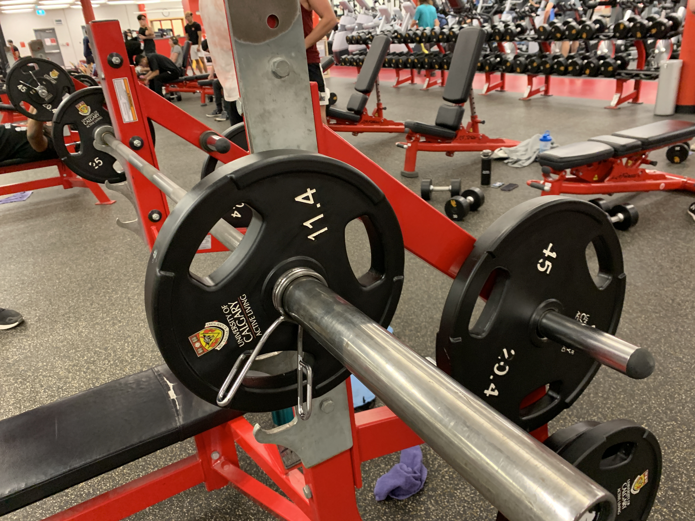

Features of my scratch maze game:
This game features three different levels, each with the objective to navigate the sprite to the end of the maze.
Bachelor of Science in Biomechanics Student
University of Calgary
Exploring the Applications of Computers in Kinesiology
and their future potential.
Welcome to my personal page. Here, you will find my interests, areas of study, and passions.I am passionate about all health and fitness related topics, and finding equitable solutions to issues in today's world. On this website, you will see some of my adventures, achievements, and interests.
Throughout my Biomechanics degree, I learn skills relating to both kinesiology, and video assessments, that include
Scratch is a high-level programming language, with visual representations to introduce coding to a wide range of individuals.
This game features three different levels, each with the objective to navigate the sprite to the end of the maze.
To play this game, simply press the green flag to start the game. Then, control the sprite by using the arrow keys. The walls will be off limits, but sprite will be able to recover after hitting walls.
Yes! At the end of the top left of the game, there will be a timer. The game must be completed before the timer runs out!
Here is a link to my resume.
Created with LaTex on Overleaf.
Here, you can find my analysis of an integrative human physiology lab data for renal function.
The Data was from a Fall 2023 KNES 323 class, and generated from physiological measurements from a refractometer. .
The first chart was the average of each group of students, and their specific gravity after x minutes of consuming the iced tea.
The Second chart was the same data presented on one plot, with the total deviation with regards to that specific time point of measurement.
The results demonstrated an overall lowering of specific gravity, which means the urine is more dillute due to the increased water intake by all three groups.
The curve is most evident in the water group, but the iced tea's high glucose concentration did not have a high difference due to almost all of the glucose being reabsorbed by the renal system.
Dartfish Video Analysis on the basic form of a bench press..
A bench form is analyzed in depth here; Standard Bench Press Form Analysis.
